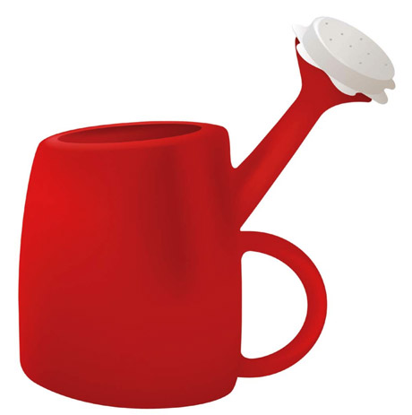

Что же такое юзабилити сайта? Начнем с определения. Usability в переводе с английского — это «удобство использования», «практичность». Почему важно уделять должное внимание юзабилити сайта?
Сегодня десятки компаний предлагают схожую продукцию. Разница между аналогичными товарами зачастую незначительна, а порой ее нет вообще. За отсутствием объективных преимуществ потребитель обращает внимание не на то, ЧТО Вы ему предлагаете, а на то, КАК Вы это делаете. Сайт — это интернет-представительство компании. Неудобный сайт — то же самое, что офис на последнем этаже здания без лифта: добраться можно, но далеко не каждый на это решится.
Теперь Вы понимаете, что юзабилити сайта — это не просто красивые слова. Грамотный веб-интерфейс — это не что иное, как Ваше конкурентное преимущество! Юзабилити сайта Вашей компании на хорошем уровне, если у пользователя возникает ощущение психологического и эстетического комфорта. Только в этом случае ему захочется изучить Ваш интернет-ресурс подробнее и сделать покупку. Если же юзабилити сайта оставляет желать лучшего, пользователь быстро покинет его, отчаявшись найти то, что искал.